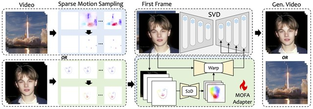

MOFA-Video: Controllable Image Animation via Generative Motion Field Adaptions in Frozen Image-to-Video Diffusion Model
ECCV, 2024
project page / paper / code
We introduce MOFA-Video to adapt motions from different domains to the frozen Video Diffusion Model. MOFA-Video can effectively animate a single image using various types of control signals, including trajectories, keypoint sequences, and their combinations.